00:02此前，你依次了解了线性回归模型、代价函数，然后是梯度下降算法。
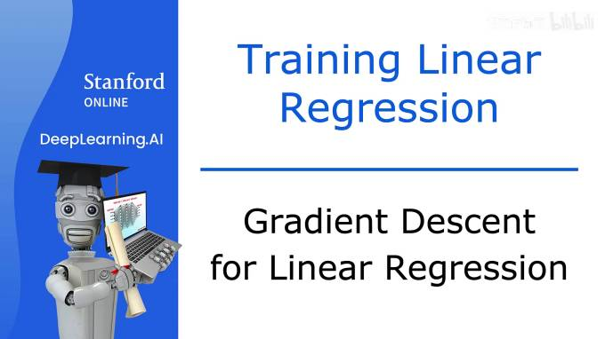
00:11本期视频我们将把这些内容整合起来，并将平方误差代价函数与梯度下降结合，用于线性回归模型。
00:21这将使我们能够训练线性回归模型，为训练数据拟合一条直线。
00:31这是线性回归模型，右边是平方误差代价函数，下方是梯度下降算法。
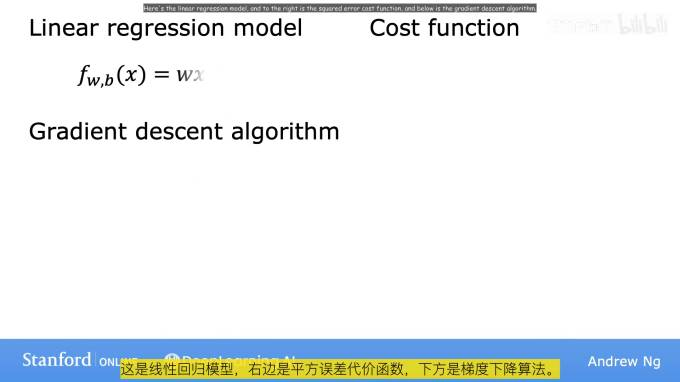
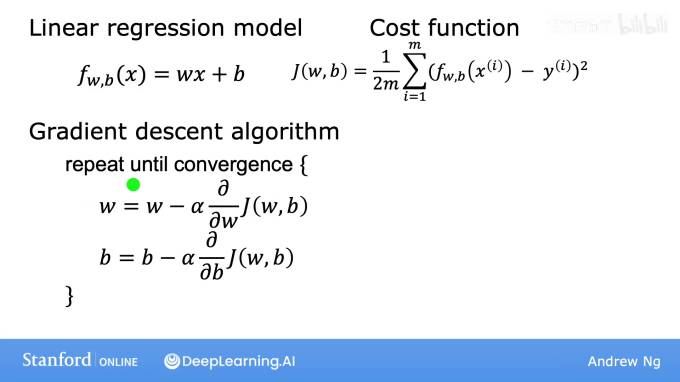
00:42事实证明，如果你计算这些导数，你会得到下面这些项。
00:49关于 w 的导数是这个：m 分之一乘以从 i 等于一到 m 的求和。
00:58然后是误差项，也就是预测值与实际值之差，再乘以输入特征 x 上标 i。
01:07而关于 b 的导数是这里的这个公式，它看起来和上面的等式一样，只是末尾没有那个 x 上标 i 项。
01:19如果你用这些公式来计算这两个导数，并以这种方式实现梯度下降，它就会奏效。
01:28现在，你可能想知道这些公式我是从哪儿得来的？
01:32它们是运用微积分推导出来的。
01:36如果你想看完整的推导过程，我会在下一张幻灯片上快速过一遍。
01:41但如果你不记得微积分，或对此不感兴趣，也别担心。
01:46你可以完全跳过下一张幻灯片的内容，仍然能够实现梯度下降并完成这门课，一切都会正常运行的。
01:56这张幻灯片是整个专项课程中数学内容最多的之一，再次强调，这完全是可选的，我们将展示如何计算导数项。我们从第一项开始。
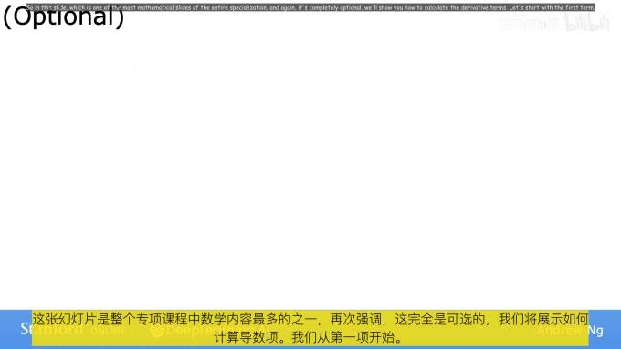
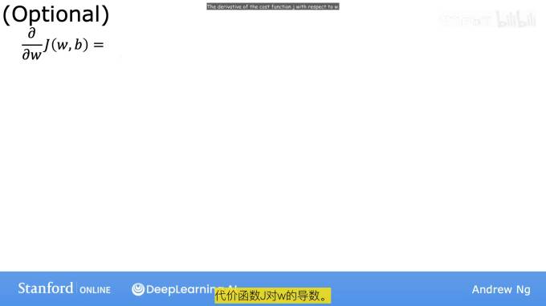
02:15我们首先代入代价函数 J 的定义。
02:20括号 w，b 等于这个。
02:25也就是二 m 分之一乘以这个平方误差项的总和。现在还要记住，f 括号 w，b，括号 x 上标 i 等于这里的。
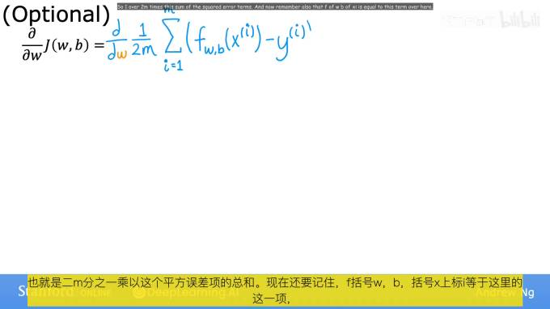
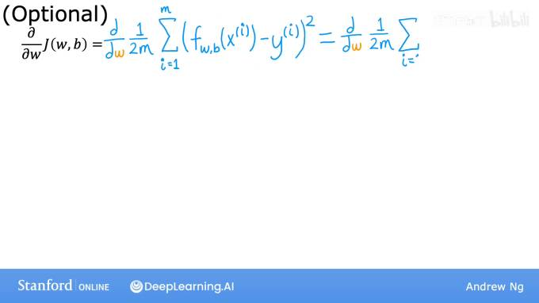
02:43也就是 W 乘以上标 i 加 b。
02:48我们要做的是，计算右边这个等式关于 w 的导数，也叫偏导数。
03:01如果你以前上过微积分课，当然没上过也完全没关系。
03:06你可能知道，根据微积分规则，导数等于这里的这一项，这就是为什么这里的二和这里的二会抵消掉，给我们留下了你在上一张幻灯片中看到的等式。
03:25顺便一提，这就是为什么本周早些时候我们要用那个二分之一来定义代价函数。
03:35它会抵消掉求导过程中出现的二。
03:41对于另一个关于 b 的导数，情况非常相似。
03:46我可以像这样写出来，并再次代入 f 括号 x 上标 i 的定义，得到这个等式。
03:56根据微积分规则，这等于这个，注意末尾不再有 x 上标了。
04:05所以两个二再次抵消，你最终得到关于 b 的导数表达式。
04:13那么现在，你有了这两个导数表达式，就可以将它们代入梯度下降算法了。
04:23这就是线性回归的梯度下降算法。
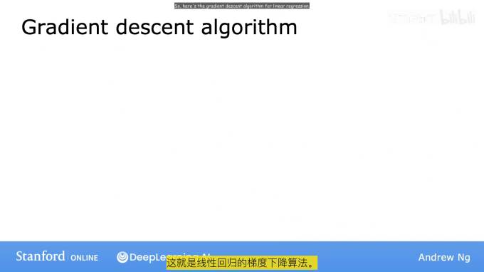
04:27你反复执行对 w 和 b 的这些更新，直到收敛。
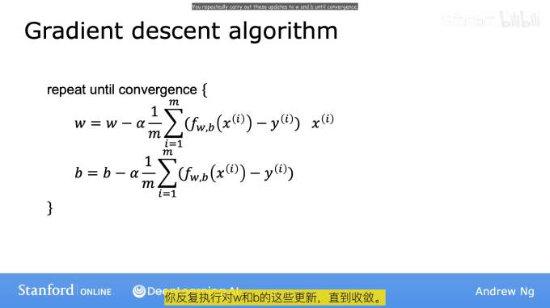
04:34记住，这个 f 是线性回归模型，所以它等于 w 乘以 x 加 b。
04:43这个表达式是代价函数关于 w 的导数，而这个表达式是代价函数关于 b 的导数。
04:54提醒一下，你需要在每一步同时更新 w 和 b。
05:02现在，让我们熟悉一下梯度下降是如何工作的。
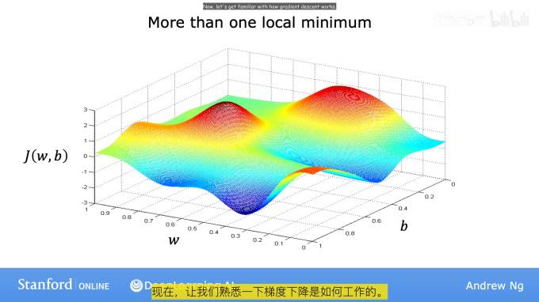
05:05我们之前看到梯度下降的一个问题是，它可能会导致局部最小值，而非全局最小值。全局最小值是指在所有可能点中，代价函数 J 值最低的那个点。
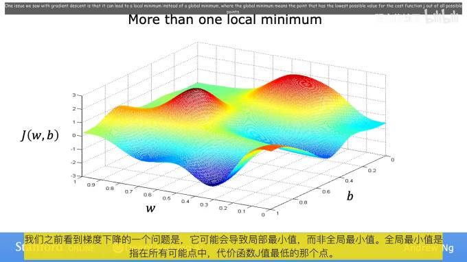
05:21你可能还记得这个曲面图，它看起来像个有草有鸟的户外公园，在小山丘上放松，有几处起伏。
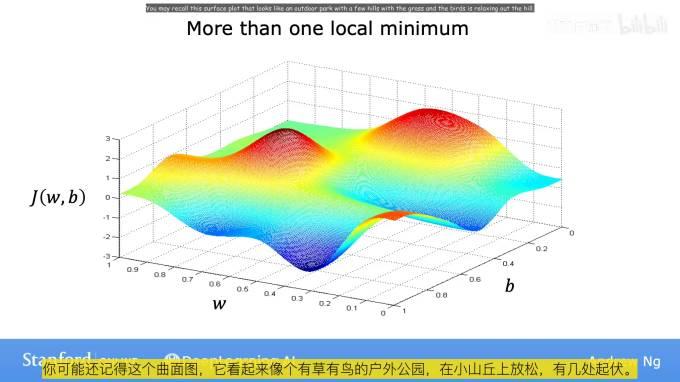
05:31这个函数有不止一个局部最小值。
05:35记住，这取决于你在哪里初始化参数 w 和 b，你可能会止于不同的局部最小值。
05:45你可能最终到达这里，也可能到达这里。
05:49但事实证明，当你将平方误差代价函数用于线性回归时，这个代价函数不会，也永远不会有多个局部最小值。n。
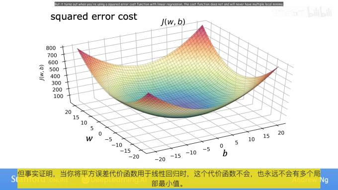
06:00因为它呈碗形，所以只有一个全局最小值。
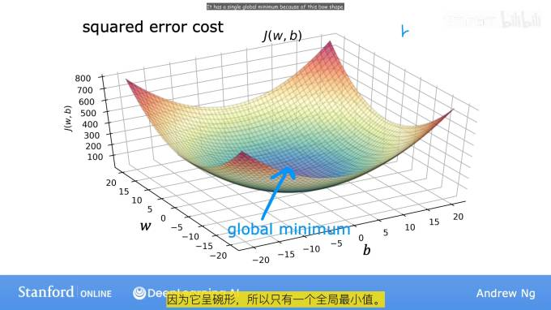
06:05对此的技术术语是，这个代价函数是一个凸函数。
06:12非正式地说，凸函数就是碗形函数，除了单一的全局最小值之外，它不能有任何其他局部最小值。
06:22因此，当你在凸函数上实现梯度下降时，一个很好的特性是，只要你的学习率选择得当，它总会收敛到全局最小值。
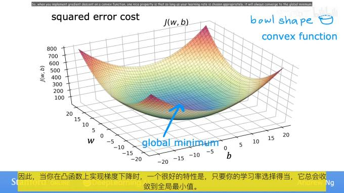
06:36恭喜你，你现在知道如何为线性回归实现梯度下降了。
06:41本周我们只剩下最后一期视频了。
06:44在那期视频中，我们将看到这个算法的实际运行。
06:49让我们进入最后一期视频吧。